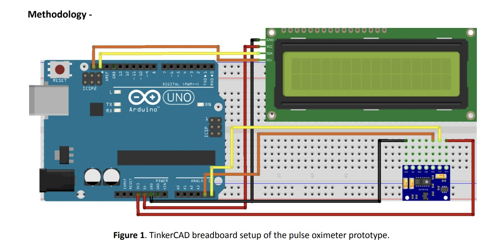

Aim / Goal
Design and construct a low-cost pulse oximeter capable of measuring blood oxygen saturation and pulse rate in real time, then compare its performance against a commercial pulse oximeter.
What we did
The prototype integrated an Arduino Uno R3, MAX30102 optical sensor and 16×2 LCD. We planned the circuit in TinkerCAD, assembled the hardware on a breadboard and programmed the system in the Arduino IDE to acquire red/infrared signals, calculate SpO₂ and pulse rate, and display live results.

Results
The prototype recorded SpO₂ values between 96% and 99%, while the commercial reference measured 97% to 98% for the same participants. SpO₂ measurements remained within approximately ±2 percentage points under stable conditions. Pulse-rate acquisition was functional but consistently high, identifying the need for further filtering and calibration.
Troubleshooting
The project also involved hardware troubleshooting, including replacing an unresponsive MAX30102 module, re-soldering header pins and addressing communication issues before stable sensor operation was achieved.